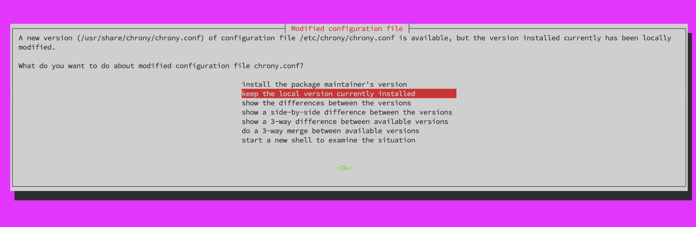
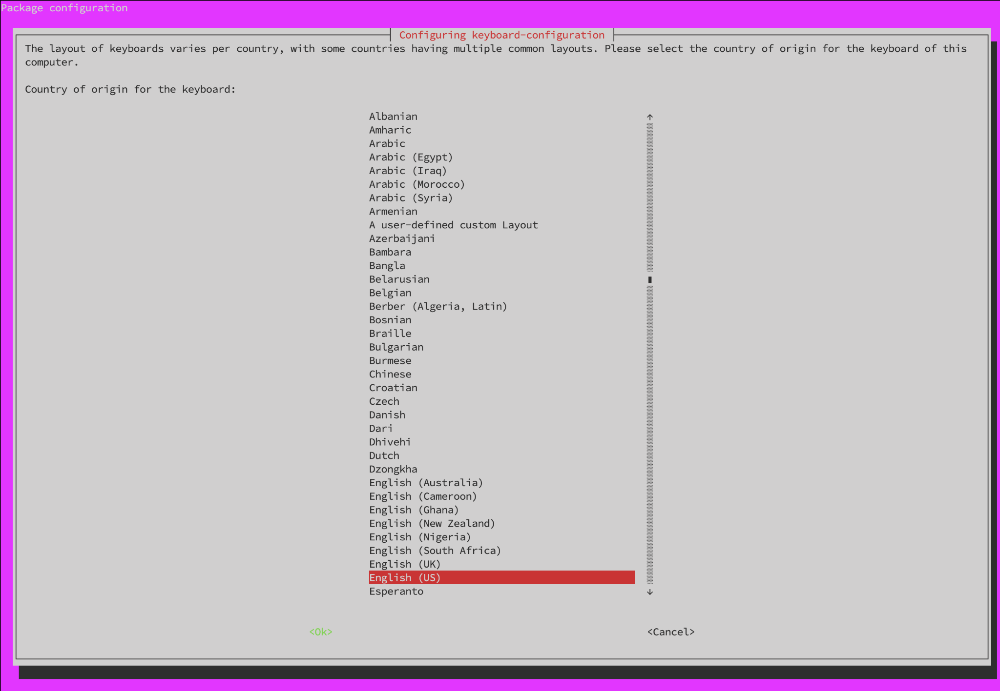
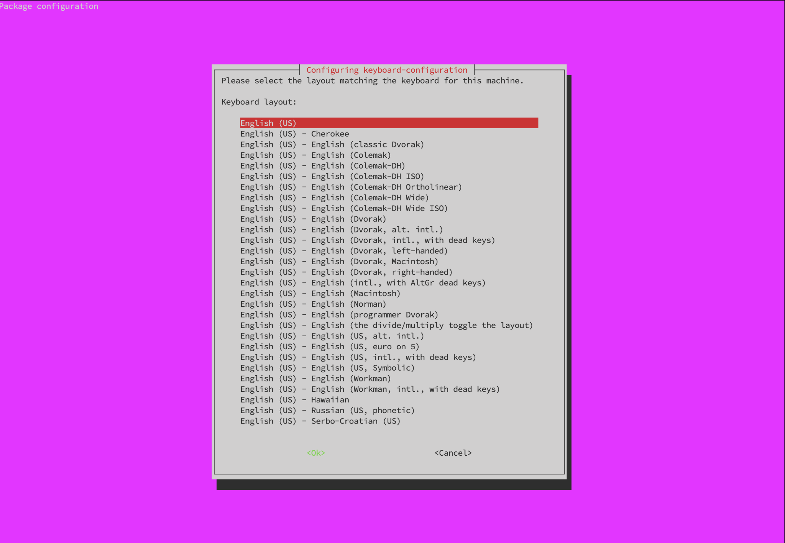
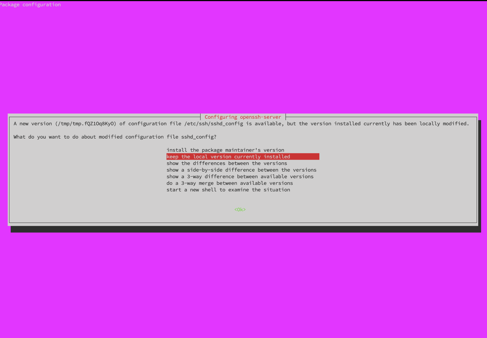
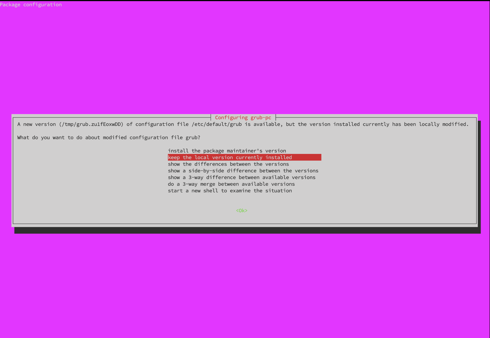
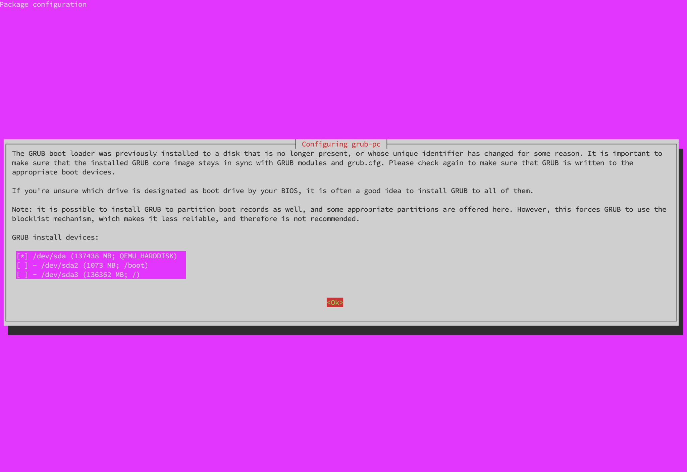

Ubuntu22.04から24.04へ移行¶
アップグレード前の確認事項
- 22.04 LTSのセキュリティサポートは
2027年6月頃まで有効です。 - 作業前に一通り熟読し、作業フローを理解して下さい。
- OSアップグレードのため、作業は慎重に実施してください。
1. 事前準備¶
1-1. スナップショットの作成¶
スナップショットの作成
アップグレード前に必ず、VPSのサーバー管理画面から現時点のスナップショット(バックアップ)を作成してください。
万一アップグレードに失敗した場合、素早く復旧できます。
1-2. SSH鍵の種類を確認する¶
SSH接続用のローカルパソコンに保存されている、SSH秘密鍵ファイルの種類を確認してください。
- id_rsa
- ssh_ed25519
のどちらか
1-3. SSHターミナルバージョン最新化¶
WindowsでR-loginをご利用の場合は、最新のRLoginを使用して下さい。
1-4. 作業対象サーバログイン¶
接続方法
1-4. 作業対象サーバログイン〜1-9. Ubuntuバージョン確認は通常のSSH接続で作業してください。
id_rsaの場合
古いssh-rsa（SHA-1）方式は非推奨／接続不可になることがあるため、Ed25519 が推奨されるので作成します。
ペア鍵の作成
ssh-keygen -t ed25519 -N '' -C ssh_connect -f ~/.ssh/ssh_ed25519
ssh_ed25519（秘密鍵）とssh_ed25519.pub（公開鍵）というファイルが作成されているか確認します。
cd ~/.ssh
ls
公開鍵を認証ファイルに書き込みます。
cat ssh_ed25519.pub >> authorized_keys
SSH鍵ファイルのダウンロード
- R-loginの場合はファイル転送ウィンドウを展開
- 左側ウィンドウ(ローカル側)は任意の階層にフォルダを作成
- 右側ウィンドウ(サーバ側)は「.ssh」フォルダを選択
- 右側ウィンドウから、
ssh_ed25519とssh_ed25519.pubの上で右クリックして 「ファイルのダウンロード」を選択 - 一度サーバからログアウト
- R-Loginのサーバ接続編集画面を開き、「SSH認証鍵」をクリックし4でダウンロードした
ssh_ed25519ファイルを選択 - サーバへ接続
※4でローカルにダウンロードしたSSH鍵ペアはバックアップしてください。
サーバーに接続できたことを確認して、サーバー内の鍵を削除します。
rm ~/.ssh/ssh_ed25519
rm ~/.ssh/ssh_ed25519.pub
1-5. ノード停止¶
sudo systemctl stop cardano-node
自動起動の停止
sudo systemctl disable cardano-node
1-6. Python依存関係の正常化¶
update-alternativesでpythonを管理しているか確認します。
update-alternatives --get-selections | grep -E '^(python|python3)\s' || echo "未登録"
未登録と表示された場合、以下の手順は不要です。
未登録以外（python3 auto /usr/bin/python3.12等）が表示された場合は、以下の手順で対応してください。
update-alternativesでPythonを管理していた場合
Ubuntu22.04時代にupdate-alternativesでpython3.12等を登録していた場合、Ubuntu24.04へのアップグレード過程でpython3-apt等のaptフックが破損する原因となります。
該当する場合のみ、以下の手順でアップグレード前にapt管理状態へ戻してください。
現状確認
現在のシンボリックリンク先を確認します。
ls -l /usr/bin/python3
グローバルにインストールしたpipパッケージの削除
block-notify関連の依存パッケージをpip3でグローバルインストールしている場合は削除します。
（アップグレード後にvenv環境で再インストールします）
sudo pip3 uninstall -y watchdog pytz python-dateutil requests discordwebhook slackweb i18nice
黄色文字で
◯◯ as it is not installed.と表示されても問題ないのでスルーしてください
update-alternatives登録の解除
sudo update-alternatives --remove-all python3 2>/dev/null || true
sudo update-alternatives --remove-all python 2>/dev/null || true
apt管理のpython3を再インストール
dpkg管理のシンボリックリンクを復元します。
sudo apt install --reinstall python3-minimal python3 -y
確認
シンボリックリンクがpython3.10を指していることを確認します。
ls -l /usr/bin/python3
/usr/bin/python3 -> python3.10
バージョンを確認します。
python3 --version
Python 3.10.*
サードパーティリポジトリ（deadsnakes PPA等）からpython3.10以外のバージョン（python3.8、python3.11、python3.12等）をインストールしているか確認します。
dpkg-query -W -f='${Package} ${Version}\n' 2>/dev/null | grep -E '^(python3\.(8|9|11|12|13)|libpython3\.(8|9|11|12|13)|idle-python3\.(8|9|11|12|13))' || echo "該当なし"
該当なしと表示された場合、以下の手順は不要です。
python3.8、python3.11、python3.12等のパッケージが表示された場合は、以下の手順で対応してください。
サードパーティリポジトリからpython3.10以外を導入していた場合
Ubuntu22.04の標準はpython3.10ですが、過去にdeadsnakes PPA等からpython3.8 / python3.11 / python3.12等を導入していた場合、それらを残したままdo-release-upgradeを実行すると以下の問題が発生します。
- PPA側のバージョン（
+jammy1・+focal1等のサフィックス）がUbuntu24.04公式版より新しく、依存関係が解決できなくなる ufw等のPython製ツールが巻き添えで自動削除される- 存在しない
python3.xを指すupdate-alternativesエントリがaptフックを破損させる
サフィックスについて
バージョン末尾のサフィックスはPPAが作成された当時のUbuntuコード名を示します。
過去のアップグレード履歴によって異なるサフィックスが混在することがあります。
| サフィックス | 元のUbuntu |
|---|---|
+focal1 |
20.04 LTS時代に追加 |
+jammy1 |
22.04 LTS時代に追加 |
該当する場合のみ、以下の手順でアップグレード前にPPA由来のパッケージとリポジトリを除去してください。
対象バージョンの特定
削除対象となるpython3.x系パッケージを一覧表示します。
dpkg-query -W -f='${Package} ${Version}\n' | grep -E '^(python3\.(8|9|11|12|13)|libpython3\.(8|9|11|12|13)|idle-python3\.(8|9|11|12|13))'
表示されたバージョン（例:
3.8、3.12）を以降の手順の対象とします。
deadsnakes PPAリポジトリの無効化
PPAリポジトリファイルを.disabledにリネームします。
sudo sh -c 'for f in /etc/apt/sources.list.d/*deadsnakes*.list; do [ -f "$f" ] && mv "$f" "$f.disabled"; done'
確認
ls /etc/apt/sources.list.d/ | grep -i deadsnakes
.disabledのみ表示されればOK
python3.x系パッケージのパージ
python3.10以外の全バージョン（python3.8〜python3.13）の関連パッケージを一括パージします。
sudo apt purge -y \
'python3.8*' 'libpython3.8*' 'idle-python3.8*' \
'python3.9*' 'libpython3.9*' 'idle-python3.9*' \
'python3.11*' 'libpython3.11*' 'idle-python3.11*' \
'python3.12*' 'libpython3.12*' 'idle-python3.12*' \
'python3.13*' 'libpython3.13*' 'idle-python3.13*' \
2>/dev/null || true
削除対象は以下の2種類です。インストールされていないパッケージは無視されます。
バージョンのサフィックス例 出所 +focal1、+jammy1deadsnakes PPA由来 ~20.04.*、~22.04.*旧Ubuntuの公式パッケージがアップグレード時に残留したもの
2to3、idle等のメタパッケージも依存関係で残っている場合があるため削除します。
sudo apt purge -y 2to3 idle 2>/dev/null || true
APTを更新
sudo apt update
ここでdeadsnakes関連のエラーが出ないことを確認
1-7. システムアップデート¶
sudo apt update && sudo apt full-upgrade -y && sudo apt autoremove -y
1-8. LTSアップグレード設定の確認¶
grep Prompt /etc/update-manager/release-upgrades
Prompt=lts であること
1-9. Ubuntuバージョン確認¶
現在のバージョンを確認します。
lsb_release -d
Description: Ubuntu 22.04.* LTS
アップグレードコマンドの確認します。
which do-release-upgrade || sudo apt install ubuntu-release-upgrader-core -y
アップグレード可能なバージョンを確認します。
sudo do-release-upgrade -c
Checking for a new Ubuntu release
New release '24.04.* LTS' available.
Run 'do-release-upgrade' to upgrade to it.
アップグレード前にその他アップグレードが必要なパッケージがあるかどうか確認します。
apt list --upgradable
パッケージが表示されなければ問題ありません。
apt-mark showhold
何も表示されなければ問題ありません。
ある場合
表示されたパッケージをアップグレードします。
以下は一例です。
apt list --upgradable
Listing... Done
gum/unknown 0.17.0 amd64 [upgradable from: 0.16.2]
sosreport/jammy-updates 4.10.2-0ubuntu0~22.04.1 amd64 [upgradable from: 4.9.2-0ubuntu0~22.04.1]
パッケージが hold 状態になっている場合があります。
apt-mark showhold
gum
holdされているパッケージを解除します。
sudo apt-mark unhold パッケージ名
パッケージを更新します。
sudo apt install パッケージ名
その後アップグレードします。
sudo apt full-upgrade -y
アップグレードが完了したら、再度以下を実行して更新可能パッケージが残っていないことを確認します。
apt list --upgradable
1-10. リレーサーバーにGrafanaを搭載している場合の対応¶
Grafana搭載サーバー
Grafanaリポジトリの無効化
- disabledへとファイル名変更
sudo mv /etc/apt/sources.list.d/grafana.list \
/etc/apt/sources.list.d/grafana.list.disabled 2>/dev/null
sudo mv /etc/apt/sources.list.d/grafana.list.distUpgrade \
/etc/apt/sources.list.d/grafana.list.distUpgrade.disabled 2>/dev/null
- 確認（.disabled だけならOK）
grep -R "apt.grafana.com" /etc/apt/
- APT を更新
sudo apt update
ここで EXPKEYSIG エラーが出ないことを確認
1-11. サーバー再起動¶
sudo reboot
2. Ubuntuアップグレード¶
アップグレードの注意点
Ubuntu24.04アップグレード(以下の作業)において、SSH接続での作業は不意な切断が発生した場合に復旧が困難になるため非推奨となっております。
そのため、契約事業者(VPS)のマイページまたはサーバーパネルに付随しているコンソール画面(VNCまたはKVNなど)からの作業をオススメします。
ただし以下の点にご了承頂ける場合はSSH接続で作業することも可能です。
- 事前にスナップショット(バックアップ)作成が可能な方
- 不意なSSH切断でアップグレードが中断してもご自身で復旧出来る方
SSHで作業する場合
-
予備のSSHポートを開放してください。
※ただしAWSやIONOSなど、VPSサーバー管理画面からファイアウォールを設定する場合は、以下のコードは実行せずVPS管理画面から設定してください。sudo ufw allow 1022/tcp確認sudo ufw reloadsudo ufw status numbered -
R-loginを使用する場合は、不意な切断を防ぐため以下の設定を行って下さい。 「
ファイル」→「サーバーに接続」→ 接続先右クリックし「接続を編集する」→「プロトコル」→ SSH枠の「KeepAliveパケット送信間隔(sec)」にチェックを入れ、空欄に20を入力してください。
2-1. アップグレード実行¶
接続パターン
- パターン1：VPSサーバー管理画面のコンソールからの接続
- パターン2：ローカルPCにインストールしたVNCクライアントからの接続(主にContabo)
- パターン3：通常通りSSHでの接続
SSH接続でアップグレードする場合、tmux環境内で実行します。
tmux new -s ubuntu-upgrade
tmuxセッション内でアップグレードを実行します。
sudo do-release-upgrade
SSHが切断された場合（復帰方法）
再接続後、以下で tmux に復帰できます。
tmux a -t ubuntu-upgrade
2-2. アップグレードメッセージ¶
以下、確認メッセージ例です。
ご利用のサーバーによって表示内容が異なる場合があります。
表示された内容をよく読んで下さい。
注意
設定ファイルに関する確認メッセージが表示された場合は、
必ず keep the local version currently installed（現在の設定を維持する） を選択してください。
サーバーによっては chrony や sshd など複数の設定ファイルで同様のメッセージが表示される場合がありますが、
いずれの場合も keep the local version currently installed を選択します。
1. Ubuntuの案内メッセージ（README）
y を入力後 Enter
Ubuntu is a Linux distribution for your desktop or server, with a fast
and easy install, regular releases, a tight selection of excellent
applications installed by default, and almost any other software you
can imagine available through the network.
We hope you enjoy Ubuntu.
== Feedback and Helping ==
If you would like to help shape Ubuntu, take a look at the list of
ways you can participate at
http://www.ubuntu.com/community/participate/
Your comments, bug reports, patches and suggestions will help ensure
that our next release is the best release of Ubuntu ever. If you feel
that you have found a bug please read:
http://help.ubuntu.com/community/ReportingBugs
Then report bugs using apport in Ubuntu. For example:
ubuntu-bug linux
will open a bug report in Launchpad regarding the linux package.
If you have a question, or if you think you may have found a bug but
aren't sure, first try asking on the #ubuntu or #ubuntu-bugs IRC
channels on Libera.Chat, on the Ubuntu Users mailing list, or on the
Ubuntu forums:
http://help.ubuntu.com/community/InternetRelayChat
http://lists.ubuntu.com/mailman/listinfo/ubuntu-users
http://www.ubuntuforums.org/
== More Information ==
You can find out more about Ubuntu on our website, IRC channel and wiki.
If you're new to Ubuntu, please visit:
http://www.ubuntu.com/
To sign up for future Ubuntu announcements, please subscribe to Ubuntu's
very low volume announcement list at:
http://lists.ubuntu.com/mailman/listinfo/ubuntu-announce
Continue [yN] y # y を入力後Enter
2. アップグレードを開始しますか？
y を入力後 Enter
Do you want to start the upgrade?
54 packages are going to be removed. 172 new packages are going to be
installed. 630 packages are going to be upgraded.
You have to download a total of 1,419 M. This download will take
about 4 minutes with a 40Mbit connection and about 37 minutes with a
5Mbit connection.
Fetching and installing the upgrade can take several hours. Once the
download has finished, the process cannot be canceled.
Continue [yN] Details [d] y # y 入力後Enter
3. 変更されている chrony.conf の設定ファイルをどうしますか？
keep the local version currently installed を選択後 Enter

4. このサーバーのキーボード配列はどれですか？
English (US) を選択後 Enter

5. このマシンのキーボードに対応するレイアウトを選択してください。
English (US) を選択後 Enter

6. nginxの設定
デフォルトのN を入力後 Enter
Configuration file '/etc/nginx/nginx.conf'
==> Modified (by you or by a script) since installation.
==> Package distributor has shipped an updated version.
What would you like to do about it ? Your options are:
Y or I : install the package maintainer's version
N or O : keep your currently-installed version
D : show the differences between the versions
Z : start a shell to examine the situation
The default action is to keep your current version.
*** nginx.conf (Y/I/N/O/D/Z) [default=N] ? n # n 入力後Enter
7. sudoersの設定
デフォルトのN を入力後 Enter
Configuration file '/etc/sudoers'
==> Modified (by you or by a script) since installation.
==> Package distributor has shipped an updated version.
What would you like to do about it ? Your options are:
Y or I : install the package maintainer's version
N or O : keep your currently-installed version
D : show the differences between the versions
Z : start a shell to examine the situation
The default action is to keep your current version.
*** sudoers (Y/I/N/O/D/Z) [default=N] ? n # n 入力後Enter
8. sysctlの設定
デフォルトのN を入力後 Enter
Configuration file '/etc/sysctl.conf'
==> Modified (by you or by a script) since installation.
==> Package distributor has shipped an updated version.
What would you like to do about it ? Your options are:
Y or I : install the package maintainer's version
N or O : keep your currently-installed version
D : show the differences between the versions
Z : start a shell to examine the situation
The default action is to keep your current version.
*** sysctl.conf (Y/I/N/O/D/Z) [default=N] ? n # n 入力後Enter
9. この変更された SSH 設定ファイルをどうしますか？
keep the local version currently installed を選択後 Enter

10. この変更された GRUB 設定ファイルをどうしますか？
keep the local version currently installed を選択後 Enter

11. GRUB（ブートローダー）をどのディスクにインストールするか？
/dev/sda 上でスペースキーを押して選択し、Tabキーを押して Ok を選択した後、Enter

12. 古い不要パッケージを削除しますか？
y を入力後 Enter
Remove obsolete packages?
114 packages are going to be removed.
Removing the packages can take several hours.
Continue [yN] Details [d] y # y 入力後Enter
13. アップグレードが完了しました。再起動しますか？
y を入力後 Enter
System upgrade is complete.
Restart required
To finish the upgrade, a restart is required.
If you select 'y' the system will be restarted.
Continue [yN] y # y 入力後Enter
3. アップグレード確認(SSH接続)¶
接続方法
3. アップグレード確認(SSH接続)〜5. ノード再インストールはSSH接続で作業してください。
3-1. 現在のUbuntuバージョン確認¶
lsb_release -d
No LSB modules are available.
Description: Ubuntu 24.04.4 LTS
ヒント
24.04はブラケットペーストモードが有効になっているためコマンドペースト後、ENTERで実行する必要があります。
3-2. ブラケットペーストモードOFF¶
grep -qxF 'set enable-bracketed-paste off' ~/.inputrc || echo 'set enable-bracketed-paste off' >> ~/.inputrc
3-3. SSH再接続¶
exit
SSHで再接続してください。
3-4. リレーサーバーにGrafanaを搭載している場合の対応¶
Grafana搭載サーバー
Ubuntu24.04へとアップグレード完了後は、以下の対応を実施することを忘れないでください。
Grafana 復旧（鍵更新）
- 古い鍵削除
sudo rm -f /usr/share/keyrings/grafana.key
sudo rm -f /etc/apt/keyrings/grafana.gpg
- 新しい鍵登録
sudo mkdir -p /etc/apt/keyrings
wget -q -O - https://apt.grafana.com/gpg.key \
| gpg --dearmor \
| sudo tee /etc/apt/keyrings/grafana.gpg > /dev/null
sudo chmod 644 /etc/apt/keyrings/grafana.gpg
- Grafana リポジトリ再登録
echo 'deb [signed-by=/etc/apt/keyrings/grafana.gpg] https://apt.grafana.com stable main' \
| sudo tee /etc/apt/sources.list.d/grafana.list
- APT に再認識させる
sudo apt update
- Grafana が復旧しているか確認
apt policy grafana
https://apt.grafana.comが表示されればOK
4. 依存関係再インストール¶
システムアップデート
sudo apt update && sudo apt upgrade -y
sudo apt install bc curl htop nano needrestart protobuf-compiler rsync ufw zstd automake build-essential pkg-config libffi-dev libgmp-dev libssl-dev libncurses-dev libsystemd-dev zlib1g-dev make g++ tmux git jq wget libtool autoconf liblmdb-dev liburing-dev libsnappy-dev -y
デーモン再起動自動化
sudo grep -qxF "\$nrconf{restart} = 'a';" /etc/needrestart/conf.d/50local.conf || \
echo "\$nrconf{restart} = 'a';" | sudo tee -a /etc/needrestart/conf.d/50local.conf > /dev/null
sudo sed -i '/^\$nrconf{blacklist_rc}/d' /etc/needrestart/conf.d/50local.conf
sudo grep -qxF "\$nrconf{blacklist_rc} = [qr(^cardano-node\\.service$) => 0,];" /etc/needrestart/conf.d/50local.conf || \
echo "\$nrconf{blacklist_rc} = [qr(^cardano-node\\.service$) => 0,];" | sudo tee -a /etc/needrestart/conf.d/50local.conf > /dev/null
自動起動有効化
sudo systemctl enable --now cardano-node
ノード同期状況の確認
sudo journalctl -u cardano-node -f
コンパイル済みHaskellパッケージ削除
cd ~/.cabal/store
rm -rf ghc-8.*
sudo apt install bc curl htop nano needrestart protobuf-compiler python3-pip python3-venv python3-full rsync ufw zstd automake build-essential pkg-config libffi-dev libgmp-dev libssl-dev libncurses-dev libsystemd-dev zlib1g-dev make g++ tmux git jq wget libtool autoconf liblmdb-dev liburing-dev libsnappy-dev -y
Python依存関係エラーの対処
アップグレード後にaptコマンドで以下のような依存関係エラーが表示された場合の対処です。
The following packages have unmet dependencies:
python3.12-full : Depends: python3.12 (= 3.12.3-1ubuntu0.13) but 3.12.13-1+jammy1 is to be installed
python3.12-venv : Depends: python3.12 (= 3.12.3-1ubuntu0.13) but 3.12.13-1+jammy1 is to be installed
+jammy1の部分は+focal1等、サーバーのアップグレード履歴によって異なります。
Python依存関係エラーが発生した場合
deadsnakes PPA由来のpython3.12（+jammy1・+focal1等のサフィックス）がUbuntu24.04公式版（3.12.3-1ubuntu0.13）より新しいため、aptが自動解決できない状態です。
aptの依存解決を迂回してdpkgで直接ダウングレードします。
状況確認
apt policy python3.12 libpython3.12-stdlib | grep -E 'Installed|Candidate'
Installed: 3.12.12-1+jammy1やInstalled: 3.12.11-1+focal1等のPPA版が表示された場合は以下の手順へ
noble版の.debをダウンロード
cd /tmp && sudo apt-get download \
python3.12=3.12.3-1ubuntu0.13 \
libpython3.12-stdlib=3.12.3-1ubuntu0.13
dpkgで強制ダウングレード
sudo dpkg --install --force-downgrade \
/tmp/python3.12_3.12.3-1ubuntu0.13_amd64.deb \
/tmp/libpython3.12-stdlib_3.12.3-1ubuntu0.13_amd64.deb
残りのパッケージをインストール
sudo apt install -y python3.12-full python3.12-venv
確認
apt policy python3.12 | grep Installed
Installed: 3.12.3-1ubuntu0.*（+jammyを含まない）になっていればOK
上記エラー対処後は依存関係インストールを再実行してください。
python3 -m venv ~/notify-venv
~/notify-venv/bin/pip install -U pip
~/notify-venv/bin/pip install watchdog pytz python-dateutil requests discordwebhook slackweb i18nice[YAML] python-dotenv
確認
~/notify-venv/bin/python -c "import watchdog, pytz, dateutil, requests, discordwebhook, slackweb, i18n, dotenv; print('OK')"
OKと表示されれば問題ありません。
sudo systemctl stop cnode-blocknotify.service
cat > $NODE_HOME/service/cnode-blocknotify.service << EOF
# file: /etc/systemd/system/cnode-blocknotify.service
[Unit]
Description=Cardano Node - SPO Blocknotify
BindsTo=cnode-cncli-sync.service
After=cnode-cncli-sync.service
[Service]
Type=simple
User=$(whoami)
WorkingDirectory=${NODE_HOME}/scripts/block-notify
ExecStart=/home/${USER}/notify-venv/bin/python -u ${NODE_HOME}/scripts/block-notify/block_notify.py
Restart=on-failure
StandardOutput=syslog
StandardError=syslog
SyslogIdentifier=cnode-blocknotify
[Install]
WantedBy=cnode-cncli-sync.service
EOF
sudo cp $NODE_HOME/service/cnode-blocknotify.service /etc/systemd/system/cnode-blocknotify.service
sudo chmod 644 /etc/systemd/system/cnode-blocknotify.service
sudo systemctl daemon-reload
sudo systemctl enable --now cnode-blocknotify.service
デーモン再起動自動化
sudo grep -qxF "\$nrconf{restart} = 'a';" /etc/needrestart/conf.d/50local.conf || \
echo "\$nrconf{restart} = 'a';" | sudo tee -a /etc/needrestart/conf.d/50local.conf > /dev/null
sudo sed -i '/^\$nrconf{blacklist_rc}/d' /etc/needrestart/conf.d/50local.conf
sudo grep -qxF "\$nrconf{blacklist_rc} = [qr(^cardano-node\\.service$) => 0, qr(^cnode-blocknotify\\.service$) => 0, qr(^cnode-cncli-sync\\.service$) => 0,];" /etc/needrestart/conf.d/50local.conf || \
echo "\$nrconf{blacklist_rc} = [qr(^cardano-node\\.service$) => 0, qr(^cnode-blocknotify\\.service$) => 0, qr(^cnode-cncli-sync\\.service$) => 0,];" | sudo tee -a /etc/needrestart/conf.d/50local.conf > /dev/null
自動起動有効化
sudo systemctl enable --now cardano-node
ノード同期状況の確認
sudo journalctl -u cardano-node -f
コンパイル済みHaskellパッケージ削除
cd ~/.cabal/store
rm -rf ghc-8.*
起動確認
blocknotify
[*] SPO Block Notify(v2..)を起動しました
ノードが起動していなければ上記の表示になりません
最新バージョンにアップデート
現在の最新バージョンはv2.5.*なのでそれ以下の方は、4. アップデート手順を実施して更新してください。
SSHでアップグレードを実施した場合
予備SSHポート（1022）を削除する前に、現在のSSHポートを許可します。
※AWSやIONOSなどはVPS管理画面から削除してください。
ステータスを確認します。
sudo ufw status
Status: active
予備SSHポート（1022）を削除します。
sudo ufw delete allow 1022/tcp
確認
sudo ufw status numbered
5. sysctlの設定¶
バックアップを取得しておきます。
sysctl \
net.ipv4.conf.all.rp_filter \
net.ipv4.conf.default.rp_filter \
net.ipv4.icmp_echo_ignore_broadcasts \
net.ipv4.conf.all.accept_source_route \
net.ipv4.conf.default.accept_source_route \
net.ipv4.conf.all.accept_redirects \
net.ipv4.conf.default.accept_redirects \
net.ipv4.conf.all.secure_redirects \
net.ipv4.conf.default.secure_redirects \
net.ipv4.conf.all.log_martians \
net.ipv4.tcp_syncookies \
net.core.somaxconn \
net.ipv4.tcp_max_syn_backlog \
net.core.netdev_max_backlog \
net.ipv4.ip_local_port_range \
> "$HOME/sysctl-before-cardano-relay-$(date +%F).txt"
sudo tee /etc/sysctl.d/99-cardano-relay.conf > /dev/null << 'EOF'
# ------------------------------
# Security hardening
# ------------------------------
# Ignore ICMP broadcast
net.ipv4.icmp_echo_ignore_broadcasts = 1
# Disable source routing
net.ipv4.conf.all.accept_source_route = 0
net.ipv4.conf.default.accept_source_route = 0
# Disable ICMP redirects
net.ipv4.conf.all.accept_redirects = 0
net.ipv4.conf.default.accept_redirects = 0
net.ipv4.conf.all.secure_redirects = 0
net.ipv4.conf.default.secure_redirects = 0
# Log suspicious packets
net.ipv4.conf.all.log_martians = 1
# SYN flood protection
net.ipv4.tcp_syncookies = 1
# ------------------------------
# Relay network performance
# ------------------------------
# Increase TCP listen queue
net.core.somaxconn = 4096
# Increase SYN backlog
net.ipv4.tcp_max_syn_backlog = 4096
# Improve network buffer
net.core.netdev_max_backlog = 5000
# Increase ephemeral port range
net.ipv4.ip_local_port_range = 10000 65535
EOF
バックアップを取得しておきます。
sysctl \
net.ipv4.conf.all.rp_filter \
net.ipv4.conf.default.rp_filter \
net.ipv4.icmp_echo_ignore_broadcasts \
net.ipv4.conf.all.accept_source_route \
net.ipv4.conf.default.accept_source_route \
net.ipv4.conf.all.accept_redirects \
net.ipv4.conf.default.accept_redirects \
net.ipv4.conf.all.secure_redirects \
net.ipv4.conf.default.secure_redirects \
net.ipv4.conf.all.log_martians \
net.ipv4.tcp_syncookies \
> "$HOME/sysctl-before-cardano-bp-$(date +%F).txt"
sudo tee /etc/sysctl.d/99-cardano-bp.conf > /dev/null << 'EOF'
# ------------------------------
# Security hardening
# ------------------------------
# Ignore ICMP broadcast
net.ipv4.icmp_echo_ignore_broadcasts = 1
# Disable source routing
net.ipv4.conf.all.accept_source_route = 0
net.ipv4.conf.default.accept_source_route = 0
# Disable ICMP redirects
net.ipv4.conf.all.accept_redirects = 0
net.ipv4.conf.default.accept_redirects = 0
net.ipv4.conf.all.secure_redirects = 0
net.ipv4.conf.default.secure_redirects = 0
# Log suspicious packets
net.ipv4.conf.all.log_martians = 1
# SYN flood protection
net.ipv4.tcp_syncookies = 1
EOF
設定反映
sudo sysctl --system
既存設定の確認
cat $HOME/sysctl-before-cardano-*.txt
6. ノード再インストール¶
ソースコードからビルドしたcardano-node/cardano-cliを使用していた場合、もしくはノードアップデートする場合に以下の手順を実行してください。
ヒント